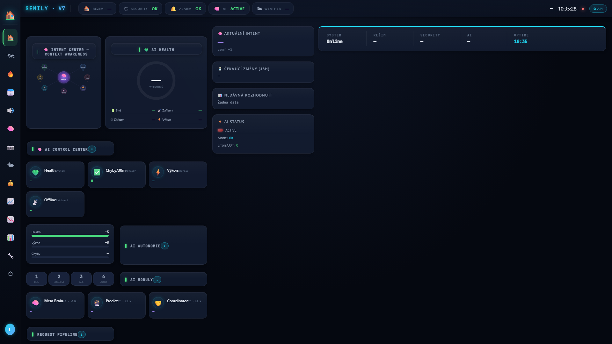

LIVE
sh_brain_guardian_v1
Brain Guardian
Top-level supervisor. Agreguje výstupy validátoru a expected state engine, vypočítává health score (aktuálně 92/100). Při kritickém poklesu vyhlásí alarm.
🏠 Prožívání · AI Brain
Brain Guardian pomáhá kontrolovat, zda se domácnost chová podle očekávání. Hledá nesrovnalosti ve stavech a záznamech, aby bylo snazší dohledat problém a připravit opravu.
Smart home, který se sám kontroluje. Detekuje ghost values, ověřuje očekávaný stav, blokuje rozbité nasazení, denně analyzuje logy přes Gemini.
sh_brain_guardian_v1
Top-level supervisor. Agreguje výstupy validátoru a expected state engine, vypočítává health score (aktuálně 92/100). Při kritickém poklesu vyhlásí alarm.
sh_expected_state_engine_v1
Pro každý čas + režim spočítá co by mělo být zapnuté / vypnuté. Slouží jako reference proti reálnému stavu — základ pro detekci anomálií.
sh_state_validator_v1
Porovnává očekávaný a reálný stav. Detekuje ghost values
(proměnné, které lžou) a stuck flagy. První produkční detekce:
priority_active=tts ghost po 00:40.
sh_release_guard_v1
Před nasazením nové verze skriptu spustí canary checks (3 testovací volání). Pokud Brain Guardian score klesne, release se zablokuje a starý skript zůstává.
sh_self_healing_v4
4 detektory každých 10 minut: orphan requests, stuck events, audio deadlocks, offline kritická zařízení. Auto-reset bez mé intervence.
sh_gemini_diagnostic_v1
Každý den v 11:40. Načte JSONL logy z SSD na Raspberry Pi (od 27.5.2026 — předtím Google Sheets), pošle Gemini Flash s diagnostickým promptem, výsledek (priority + fix suggestion) uloží do dashboardu na AI stránce.
sh_intent_engine_v1
Každou minutu se ptá: „co se dům právě snaží dělat?" Odpovědí je jeden z 8 záměrů (klidný spánek, noční výlet, ranní probouzení, příchod, odchod, …) plus skóre 0-100 jak si je systém jistý. Slouží jako vyšší vrstva nad jednotlivými skripty — jeden ucelený obraz situace místo desítek fragmentovaných signálů.
sh_health_monitor_v1
Každých 5 minut kontroluje 5 zdravotních ukazatelů — kotel, audio pipeline, presence detection, sleep state machine, energy loggery. Když některý začne dělat divné věci, do telefonu přijde push notifikace s konkrétním popisem (anti-flap guarded, aby nezasypal user spamem při short blipech).
sh_kill_switch
Jediná proměnná yes/no. Když přepneš na yes,
6 klíčových skriptů (rozhodovací mozek, predikce, ranní rutina,
hlídka, vytápění) se při příštím spuštění zastaví na začátku
a nic neudělají. Cesta k jistotě, že lidský operátor má vždy
poslední slovo. Reset jediným kliknutím.
sh_room_vacancy_guardian_v1 v1.1
Pohlídá, aby koupelna nesvítila nebo nehrála rádio dlouho po tom, co z ní někdo odešel. Verze 1.1 (14. 5.) přidala dva časové razítka: heartbeat (script začal běžet) a last_run (script doběhl). Když je první svěží ale druhý starý, vidíme přesně: cron fire-uje, ale script se zabije v polovině kvůli memory pressure. Plus stuck-state reset — když je koupelna prázdná a audio mode pořád říká radio_bathroom, vyresetuje ho na idle, aby se rádio už nikdy samo nevrátilo z prázdné koupelny.

Filozofie · Jak s AI mluvit
Jednoduché motto: na hloupou otázku hloupá odpověď.
Často slyším, že umělá inteligence nefunguje, protože píše nesmysly. Jenže ve většině případů platí jednoduché pravidlo: na hloupou otázku přijde hloupá odpověď.
AI není kouzelná věštecká koule. Je to nástroj. Když jí člověk položí nepřesnou otázku, nedá jí kontext, neuvede cíl a neřekne, co přesně od ní čeká, výsledek bývá slabý. AI pak jen hádá, doplňuje si mezery a někdy vytvoří odpověď, která sice vypadá chytře, ale prakticky je k ničemu.
Když se ale člověk naučí ptát konkrétně, přidá příklady, omezení, zdroje a jasně popíše požadovaný výstup, AI se změní z hračky na velmi silného pomocníka. Není to o tom, že AI nefunguje. Často jde spíš o to, že s ní neumíme správně mluvit.
Slabý dotaz: Napiš mi něco o AI.
Lepší dotaz: Napiš krátký, srozumitelný text pro laiky o tom, proč AI někdy odpovídá špatně, a vysvětli, že kvalita odpovědi závisí na kvalitě zadání.
Proto lidem vždy říkám: AI není náhrada za přemýšlení. Je to zesilovač přemýšlení. Když jí dáme chaos, vrátí nám chaos. Když jí dáme jasné zadání, může nám výrazně pomoci.